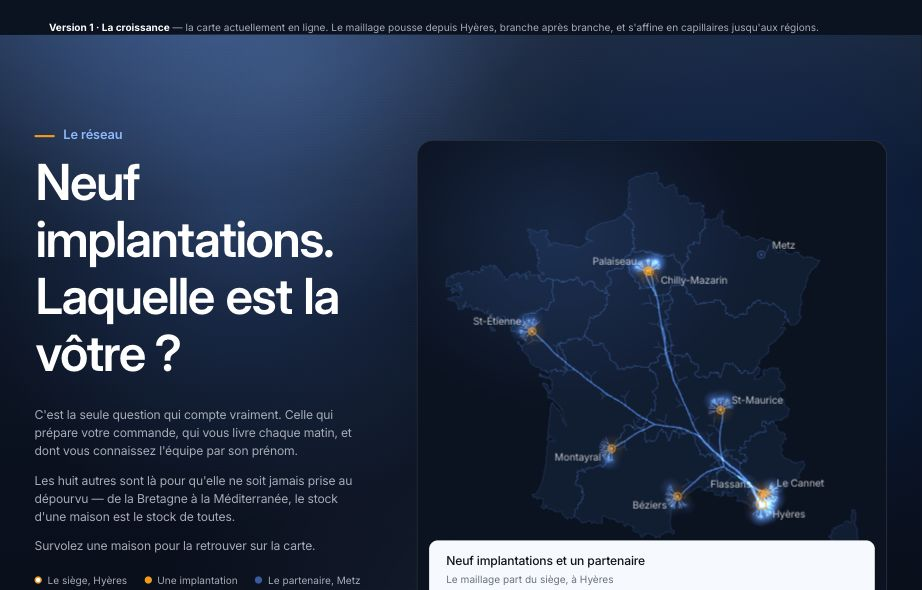
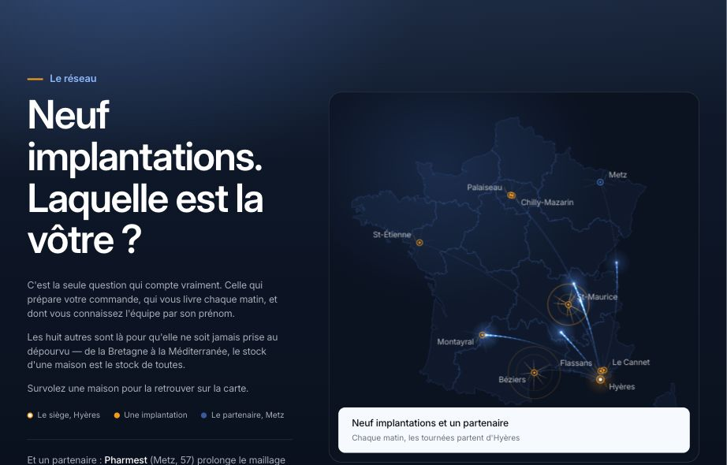
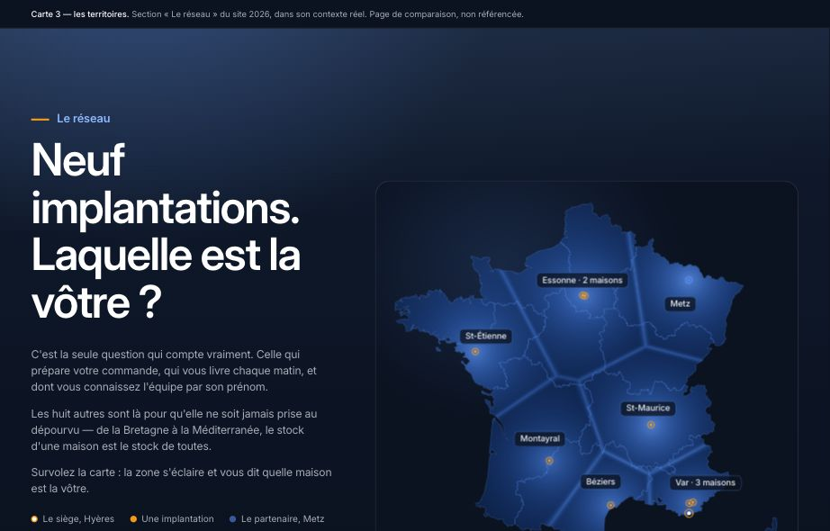
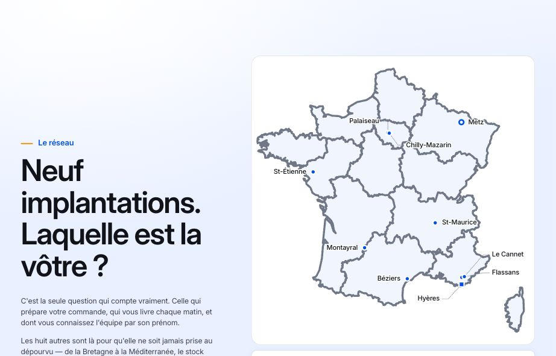
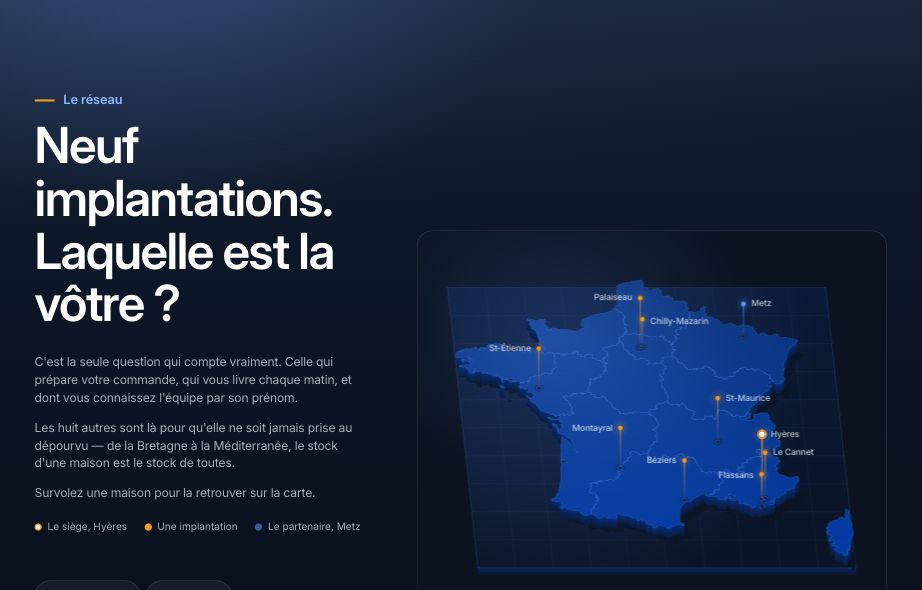

La carte du réseau
Les cinq utilisent exactement les mêmes données : le même tracé de la France, les mêmes neuf implantations et le même partenaire à Metz, avec leurs vraies coordonnées. Ce qui change, c'est ce que la carte raconte — la croissance, le mouvement, la couverture, la précision, ou le relief. Chaque version est montrée dans la vraie section du site.
Le maillage pousse depuis Hyères, branche après branche, et s'affine en capillaires jusqu'aux régions. C'est la carte en ligne aujourd'hui — elle sert de repère.
Ouvrir
Le maillage passe en filigrane : ce qu'on voit, ce sont des impulsions de lumière qui partent d'Hyères et rejoignent chaque maison, puis rayonnent vers leur région. On comprend sans une ligne de texte que quelque chose part tous les matins.
Ouvrir
Plus un réseau de traits, mais une couverture : chaque maison éclaire la zone qu'elle dessert, et l'addition des zones fait la France entière. Le message devient « où que vous soyez, une maison est près de vous ».
Ouvrir
La carte d'un atlas : un tracé fin, dix repères précis, les noms lisibles du premier coup d'œil, aucune lueur. Elle gagne par la précision, pas par l'effet — et elle reste visible même si rien ne se charge.
Ouvrir
La France vue légèrement de biais, comme une maquette posée sur une table. Chaque implantation est un point de lumière qui s'élève au-dessus du plan, relié à son ombre au sol — le siège d'Hyères étant le plus haut.
Ouvrir
Ces pages ne sont pas référencées. Les aperçus sont des images figées : les versions animées ne se jugent qu'en les ouvrant. Aucune des cinq n'invente de lieu ni de chiffre — elles lisent toutes le même jeu de coordonnées que le site.